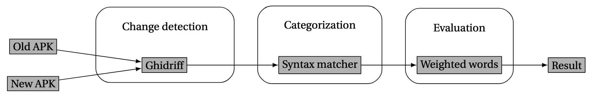
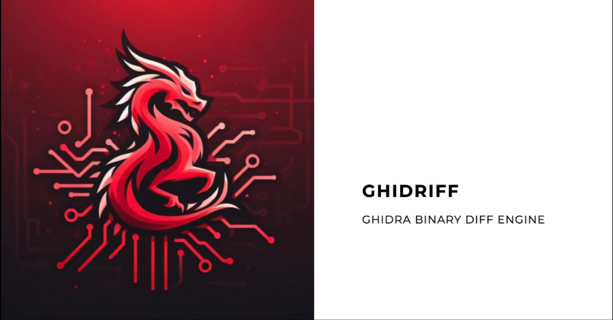

name: footer-template layout: true .footer[ Av Max Wilén & Jacob Ringfjord ] --- class: center, middle # Automatisk *versionsjämförelse* och *ändrings-kategorisering* <div style="margin-top: -30px; padding-left: 350px;"> <h3>- endast med tillgång till binärerna</h3> </div> --- # Agenda - **Arbetsprocess** - **Introduktion** - **Jämförelse mot tidigare arbete** - **Metod** - **Resultat** - **Diskussion** - **Framtida arbete och utmaningar** --- class: breadcrumb > **Arbetsprocess** → Introduktion → Tidigare arbete → Metod → Resultat → Diskussion → Framtida arbete och utmaningar ## Arbetsprocess - Träffade Jesper på en gästföreläsning på LiU - Projektplan påbörjades i en kurs under november-december - Fått ta del av ett tidigare kandidatarbete handlett av Jesper - Veckovisa möten från slutet av januari --- class: breadcrumb > ~~Arbetsprocess~~ → **Introduktion** → Tidigare arbete → Metod → Resultat → Diskussion → Framtida arbete och utmaningar ## Introduktion **Problem:** Kunskap och antaganden från tidigare analys kan bli föråldrad vid nya versioner **Syfte:** Utveckla en metod för detektering och kategorisering av kodändringar *(Fokus ligger på Android. Signal-Android används som testdata)* **Bidrag:** Effektivisera ad-hoc processen genom att snabbt kunna identifiera ändringarna som påverkar den forensiska analysen <br> <br> <br> >[!Important] > <br>- Inga forensiska verktyg har använts. > <br>- Projektet fokuserar enbart på jämförelse av Android binärer --- class: breadcrumb > ~~Arbetsprocess~~ → ~~Introduktion~~ → **Tidigare arbete** → Metod → Resultat → Diskussion → Framtida arbete och utmaningar ## Jämförelse mot tidigare arbete - **Kategorisering baserad på reguljära med nyckelord i Android-syntax** - **Mer djupgående metod** - Tittar på dekompilerad P-code från Ghidra. - Subkategorier för intressant och icke-intressanta ändringar - **Mer konkret resultat** - Siffror på träffsäkerhet för nyckelord och kategorier - **En applikation med GUI** - Inkluderar diffar i den dekompilerad P-code:en - Enkelt att söka, sortera och filtrera bland intressanta ändringar --- class: breadcrumb > ~~Arbetsprocess~~ → ~~Introduktion~~ → ~~Tidigare arbete~~ → **Metod** → Resultat → Diskussion → Framtida arbete och utmaningar ><br> > >↳ **Översikt** → Detektera ändringar → Kategorisering → Evaluering ## Metod >[!info] ><br>- **3 olika moduler används för att generera en HTML rapport** ><br>- **Fokus på Android APKer men Ghidriff stödjer fler arkitekturer** <br> <br> <div style="text-align: center;">  </div> --- class: breadcrumb > ~~Arbetsprocess~~ → ~~Introduktion~~ → ~~Tidigare arbete~~ → **Metod** → Resultat → Diskussion → Framtida arbete och utmaningar ><br> > >↳ ~~Översikt~~ → **Detektera ändringar** → Kategorisering → Evaluering ## Metod - **Efter bakgrundsarbete valde vi Ghidriff, ett Python baserat verktyg som använder Ghidra APIet** *(headless)* - **Ghidriff kan varken kategorisera eller ranka ändringar** - **Ghidriff producerar en detaljerat output** - Vi har kunna fokusera på att arbeta med datan istället för att extrahera den - Inga ändringar har behövt göras i verktyget. Det har kunnat integreras i vårt egna verktyg <div style="text-align: center;">  </div> --- class: breadcrumb > ~~Arbetsprocess~~ → ~~Introduktion~~ → ~~Tidigare arbete~~ → **Metod** → Resultat → Diskussion → Framtida arbete och utmaningar ><br> > >↳ ~~Översikt~~ → **Detektera ändringar** → Kategorisering → Evaluering ## Metod >[!info] ><br> > detta händer.... <div class="mermaid"> flowchart LR a(old binary - rpcrt4.dll-v1) --> b[GhidraDiffEngine] c(new binary - rpcrt4.dll-v2) --> b b --> e(Ghidra Project Files) b --> diffs_output_dir subgraph diffs_output_dir direction LR i(rpcrt4.dll-v1-v2.diff.md) h(rpcrt4.dll-v1-v2.diff.json) j(rpcrt4.dll-v1-v2.diff.side-by-side.html) end </div> --- class: breadcrumb > ~~Arbetsprocess~~ → ~~Introduktion~~ → ~~Tidigare arbete~~ → **Metod** → Resultat → Diskussion → Framtida arbete och utmaningar ><br> > >↳ ~~Översikt~~ → ~~Detektera ändringar~~ → **Kategorisering** → Evaluering ## Metod - Syntax matching med hjälp av reguljära uttryck - Fördefinierade kategorier med tillhörande keywords <br> >> Delas upp i två typer av kategorier: <div class="columns"> <div class="column"> <h4>Kritiska</h4> Operationer som har <strong>större</strong> chans att påverka forensiska verktyg </div> <div class="column"> <h4>Icke-kritiska</h4> Operationer som har <strong>mindre</strong> chans att påverka forensiska verktyg </div> </div> --- class: breadcrumb > ~~Arbetsprocess~~ → ~~Introduktion~~ → ~~Tidigare arbete~~ → **Metod** → Resultat → Diskussion → Framtida arbete och utmaningar ><br> > >↳ ~~Översikt~~ → ~~Detektera ändringar~~ → ~~Kategorisering~~ → **Evaluering** ## Metod --- class: breadcrumb > ~~Arbetsprocess~~ → ~~Introduktion~~ → ~~Tidigare arbete~~ → ~~Metod~~ → **Resultat** → Diskussion → Framtida arbete och utmaningar ## Resultat --- class: breadcrumb > ~~Arbetsprocess~~ → ~~Introduktion~~ → ~~Tidigare arbete~~ → ~~Metod~~ → ~~Resultat~~ → **Diskussion** → Framtida arbete och utmaningar ## Diskussion --- class: breadcrumb > ~~Arbetsprocess~~ → ~~Introduktion~~ → ~~Tidigare arbete~~ → ~~Metod~~ → ~~Resultat~~ → ~~Diskussion~~ → **Framtida arbete och utmaningar** ## Framtida arbeten och utmaningar ---